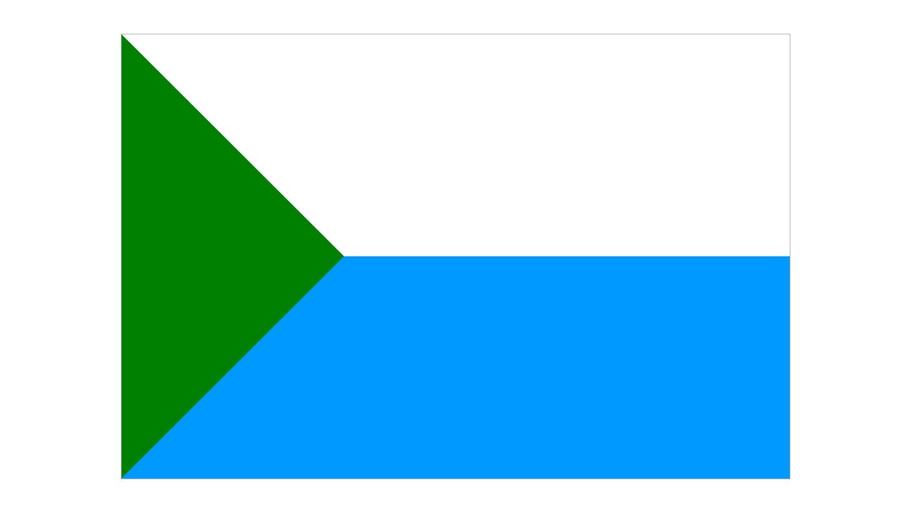
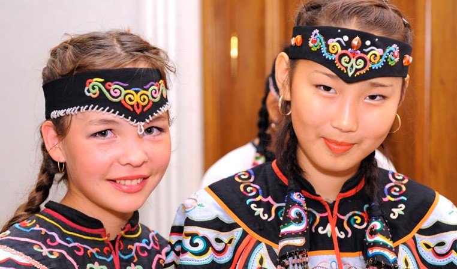
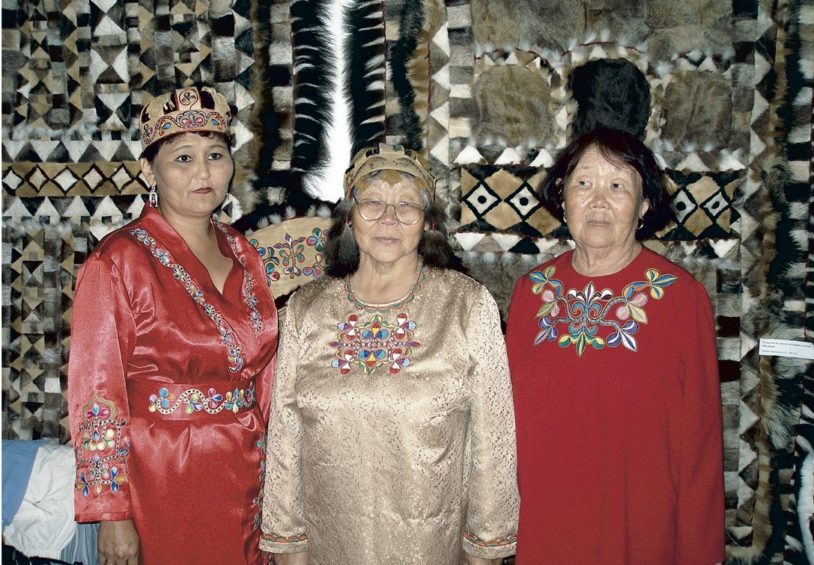
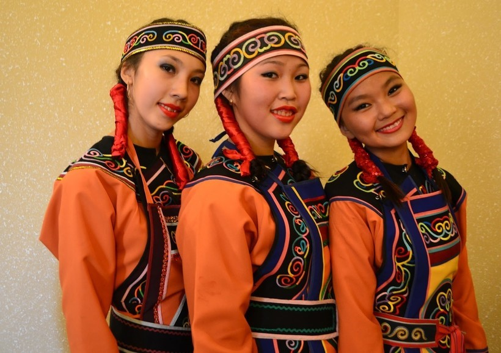
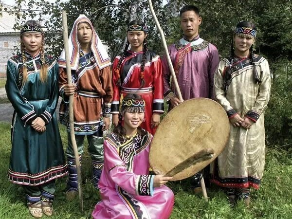

Демографическая ситуация
человек составляют коренные малочисленные народы Севера
1,7% от общего населения Хабаровского края
этносов для которых Хабаровский край является исторической территорией
коренных народов проживает на исторической территории
22 549 человек от общего числа

Коренные народы Хабаровского края

Нанайцы
Нанайцы (устаревшее самоназвание – гольды) – народ тунгусоманьчжурской языковой группы. Самоназвание — нанай, нани (от на — "земля", най — "человек") — "люди этой земли".
Территория проживания
Хабаровский край
Амурский, Нанайский, Комсомольский, Солнечный, Хабаровский районы, города Хабаровск и Комсомольск-на-Амуре
Другие регионы
Приморский край, Сахалинская область, провинция Хэйлунцзян Китайской Народной Республики (народ хэджэ)

Негидальцы
Негидальцы (самоназвание – "илкэн бэй" либо "амгунь бэенгин") – народ тунгусо-манчжурской языковой группы. В 17 веке негидальцы были известны как амгуньские тунгусы.
Территория проживания
Исторические территории
Низовья реки Амгунь и на Амуре в нескольких километрах от устья Амгуни
Современное расселение
Села Белоглинка, Тыр, Кальма и Богородское Ульчского района, село Владимировка, район имени Полины Осипенко

Нивхи
Нивхи ("нивхгу", "нивух", "нивах") – народ палеоазиатской группы в низовьях Амура и на Сахалине. Соседние народы называли их гиляха, гилэми, гилэкэ.
Территория проживания
Хабаровский край
Николаевский и Ульчский районы
Другие регионы
Сахалинская область
Традиционные занятия
Рыболовство
Промысел проходных лососей, изготовление юколы. Использование закидных неводов и заездок на нерестовых речках
Морской промысел
Зверобойный промысел морских животных
Охота и собирательство
Сухопутная охота и собирательство имели подсобное значение

Удэгейцы
Удэгейцы (удихэ, удэгэ) - один из народов тунгусо-манчжурской языковой группы. Проживают в Хабаровском и Приморском краях.
Территория проживания в Хабаровском крае
Нанайский район
Традиционные территории расселения
Район имени Лазо
Современные места проживания
Традиционные занятия и культура
Охота
Круглогодичная охота в верховьях рек. Добыча лося, изюбра, кабана, пятнистого оленя, кабарги
Рыболовство
Традиционный промысел рыбы
Декоративное искусство
Геометрический и растительный орнаменты, вышивки и аппликации на одежде
Украшения
Металлические подвески и раковинки в женской одежде
Другие коренные народы Хабаровского края
Помимо представленных народов, в Хабаровском крае также проживают:
Орочи
Народ тунгусо-маньчжурской группы, традиционно проживающий в прибрежных районах
Ульчи
Коренной народ нижнего Амура, сохраняющий традиции рыболовства и охоты
Эвенки
Традиционные оленеводы и охотники, расселенные на обширной территории
Эвены
Народ тунгусо-маньчжурской группы, занимающиеся оленеводством
Все эти народы сохраняют уникальные культурные традиции, язык и традиционный уклад жизни, составляя неотъемлемую часть культурного наследия Хабаровского края и всего Дальнего Востока России.